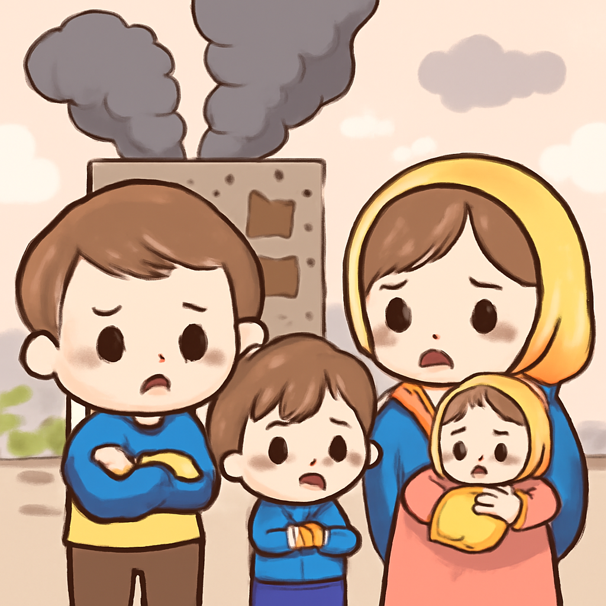
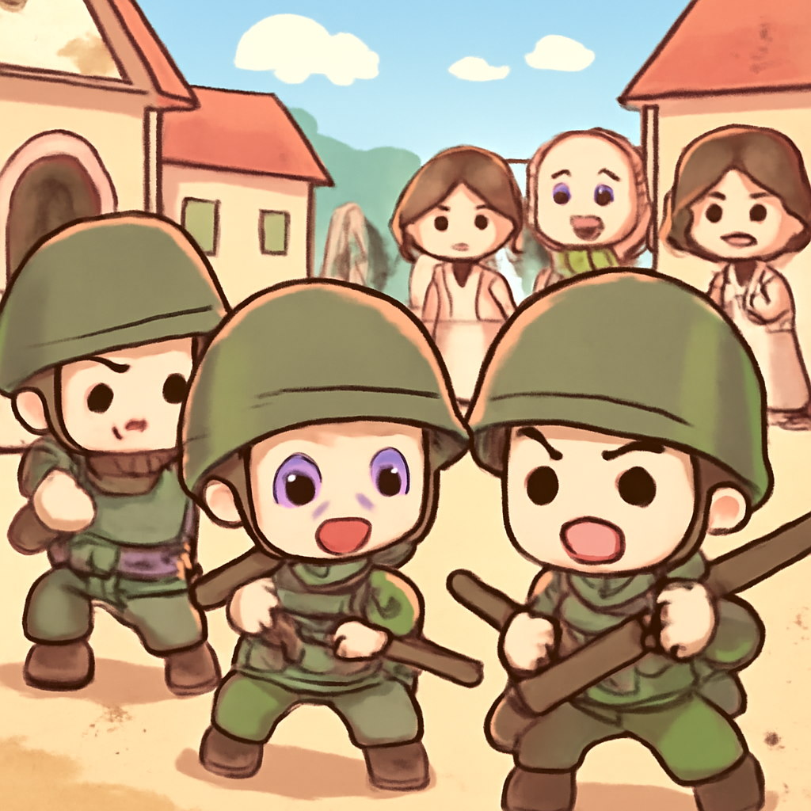
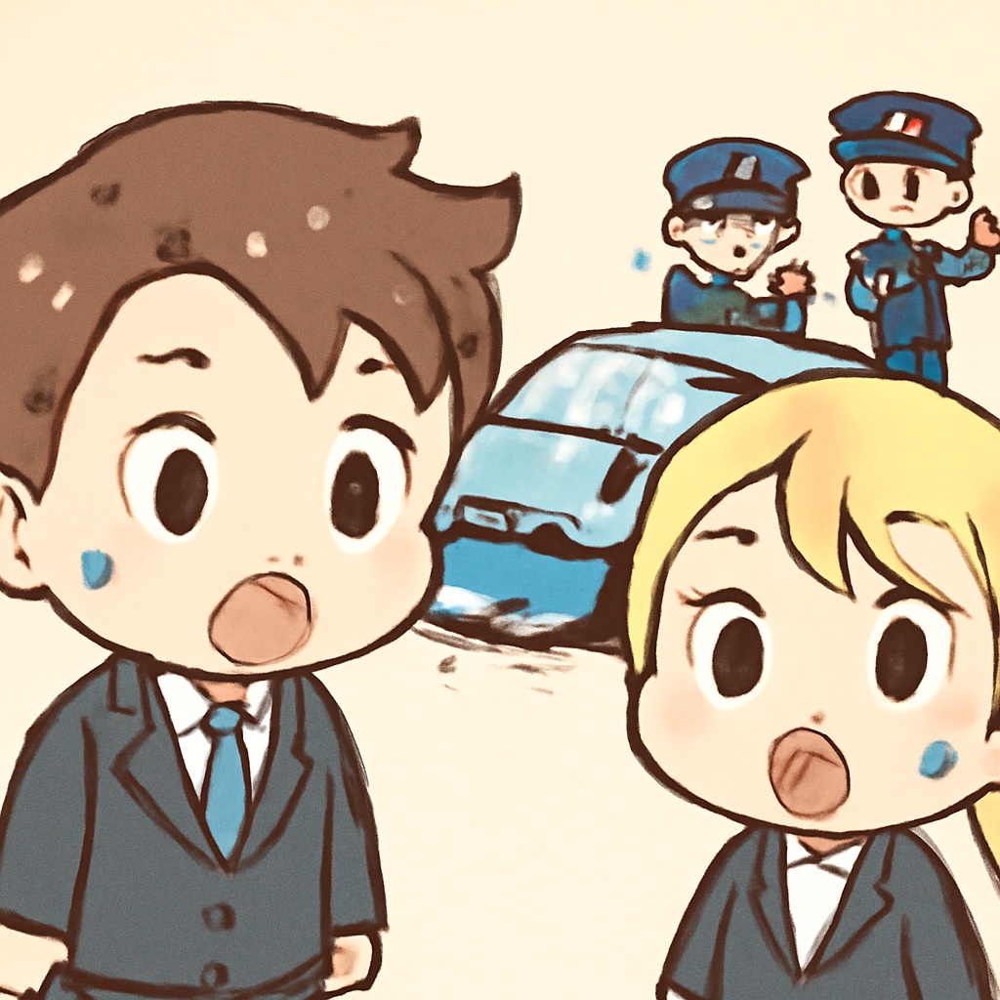
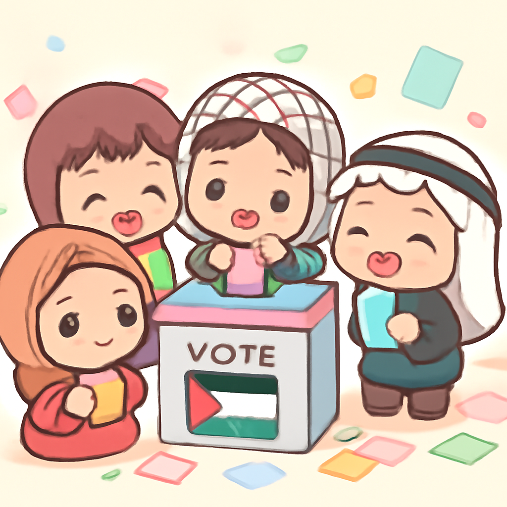
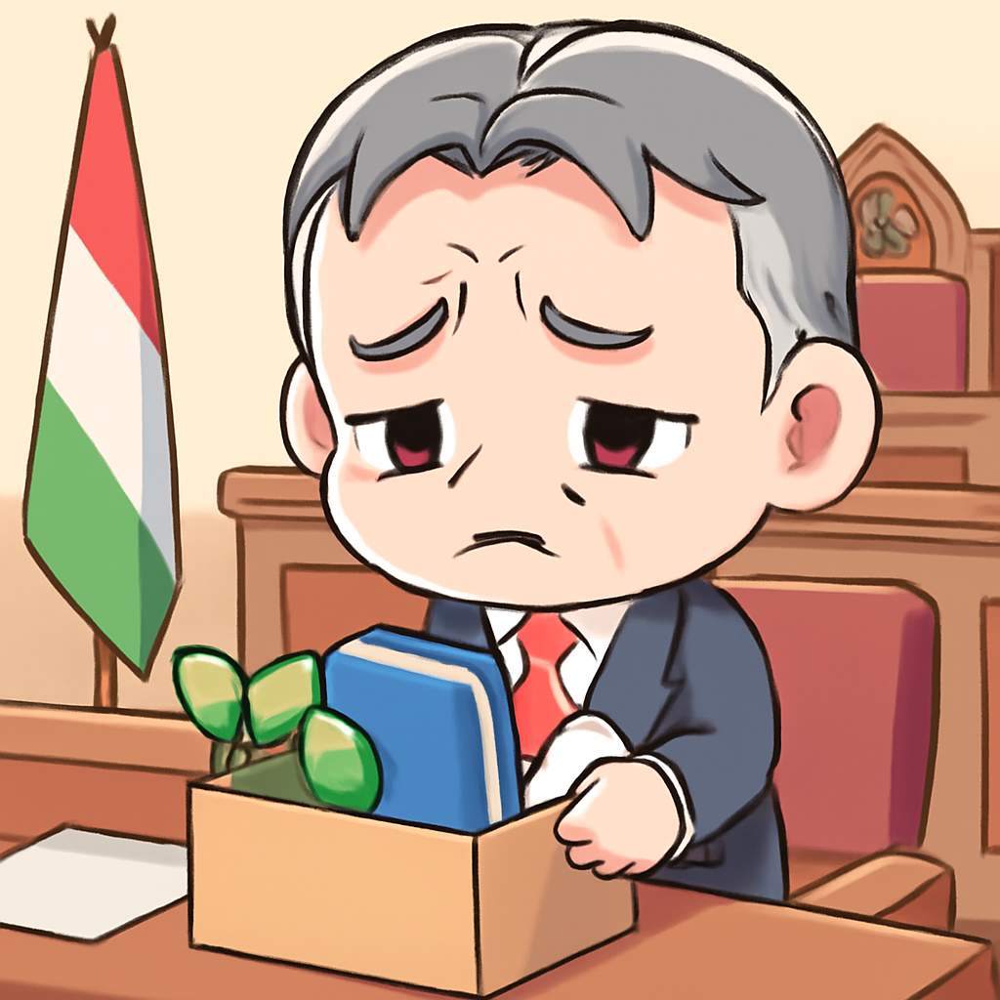

其一 · 烏克蘭第聶伯 · 俄羅斯襲擊造成七人死亡
烏克蘭第聶伯遭俄羅斯空襲，四人喪生

在烏克蘭第聶伯，俄羅斯於當地時間周四發動了一次空襲，造成至少七人死亡，其中四人是因為一棟住宅樓的爆炸而喪命。這一事件再次凸顯了持續的戰爭對平民生活的影響，令人感到心痛。希望未來能有和平的曙光，讓每個家庭都能重拾安寧。
🔗 原始新聞 ↗
2026-04-26 · 以古觀今，以笑抗愁
烏克蘭第聶伯遭俄羅斯空襲，四人喪生

在烏克蘭第聶伯，俄羅斯於當地時間周四發動了一次空襲，造成至少七人死亡，其中四人是因為一棟住宅樓的爆炸而喪命。這一事件再次凸顯了持續的戰爭對平民生活的影響，令人感到心痛。希望未來能有和平的曙光，讓每個家庭都能重拾安寧。
🔗 原始新聞 ↗
馬利發生大規模武裝攻擊，局勢緊張

在馬利，武裝團體於周四發起協同攻擊，造成多處衝突，特別是在北部和中部地區，目擊者形容這是多年來規模最大的激進攻擊。這一事件再度引發對當地安全狀況的擔憂，讓人不禁想知道，這些地方的居民是否能在未來安穩度日。
🔗 原始新聞 ↗
兩名美國特工在墨西哥遭遇致命車禍

在墨西哥，兩名據報是CIA的美國特工在一場車禍中喪生，這起事故發生在一個旨在摧毀毒品實驗室的行動中。墨西哥政府表示，這些美國特工並未獲得許可進行此行動，這引發了對國際間合作的質疑。看來，有時候即使是特工，也難以預料生活中的意外！
🔗 原始新聞 ↗
巴勒斯坦在約旦河西岸和加沙舉行地方選舉

在以色列控制下的約旦河西岸及加沙地區，當地居民於周四進行了地方選舉，這是自兩年前以來的首次投票。雖然哈馬斯等團體未參加，但這次選舉仍然被視為改善地方治理的重要機會，讓人期待未來的變化。政治的波濤洶湧總是讓人捏把冷汗！
🔗 原始新聞 ↗
奧爾班在選舉失利後將不再參加國會

匈牙利總理奧爾班於周四宣布，因在最近的選舉中遭遇重創，他將不再擔任國會議員，這對當地政壇無疑是一個重大變化。這一消息對於匈牙利未來的政治走向將帶來深遠影響，讓人不禁想知道下一步會有什麼樣的新棋局。政治如棋局，變化萬千！
🔗 原始新聞 ↗